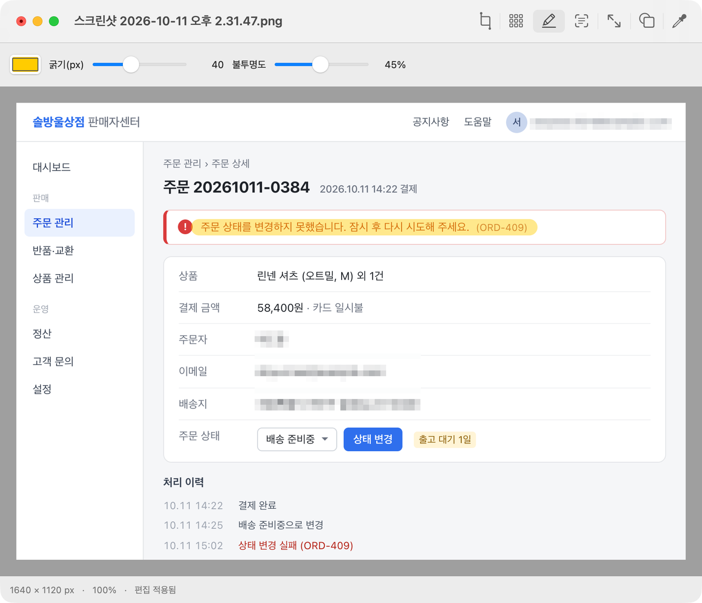
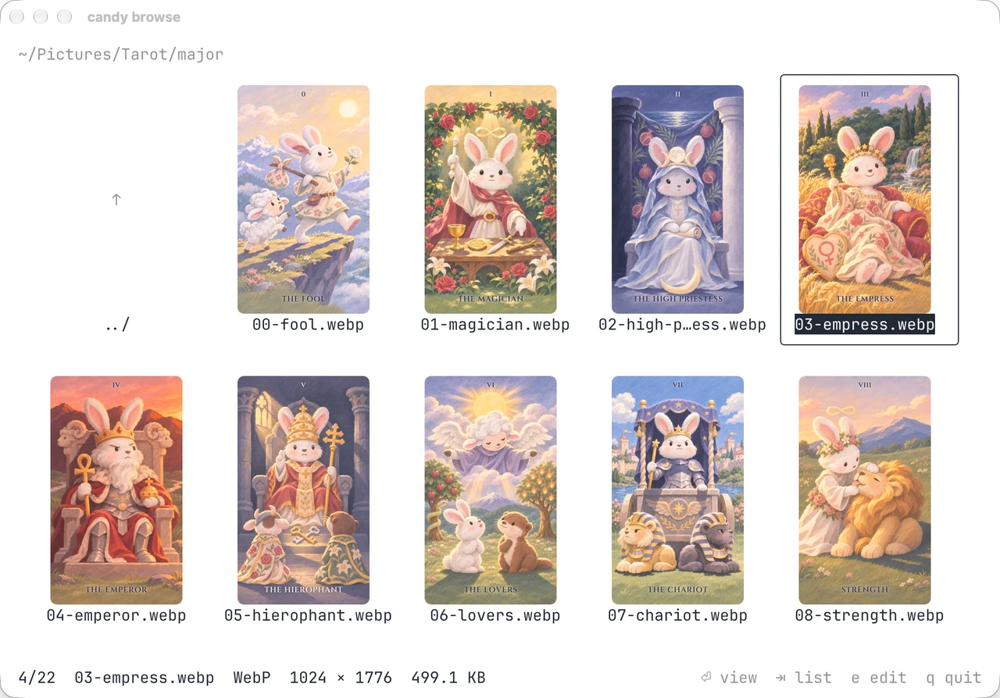

형광펜
반투명 마커로 눈에 띄게 표시합니다. 색상과 굵기, 불투명도를 고를 수 있습니다.
버그는 형광펜으로, 이메일은 모자이크로, 쓸데없는 부분은 잘라내고. 스크린샷을 보내기 전 그 한 번의 수정, Candy가 금방 끝냅니다.
macOS 14 이상 · Apple Silicon
0.4.0 새소식
candy browse를 추가했습니다. 터미널에서 폴더의 이미지를 목록이나 썸네일로 둘러봅니다.

반투명 마커로 눈에 띄게 표시합니다. 색상과 굵기, 불투명도를 고를 수 있습니다.
이름이나 주소, 얼굴처럼 가릴 곳을 드래그해 픽셀로 덮습니다. 블록 크기도 조절할 수 있습니다.
Apple Vision 문자 인식이 글자가 있는 줄을 모두 찾습니다. 한글과 일본어도 찾습니다. 상자를 확인하고 하나씩, 또는 한 번에 가립니다.
사각형을 그리고 테두리를 맞춘 다음, 그 부분만 새 이미지로 엽니다.
비율을 유지한 채 줄이거나, 픽셀 크기를 직접 입력하거나, 90도씩 돌립니다.
투명한 부분을 단색으로 채웁니다. 투명도가 없는 형식으로 저장하기 전에 쓰면 됩니다.
포인터 주변 픽셀을 돋보기로 크게 보여 줍니다. 클릭해 고정하고 화살표 키로 옮긴 다음, 색을 hex나 RGB 값으로 복사합니다.
첫 저장은 항상 새 파일입니다. 실행 취소는 몇 번이든 되돌아가고, 이미지와 문자 인식은 Mac 밖으로 나가지 않습니다.
저장할 때 형식을 고릅니다. JPEG·HEIC·AVIF·JPEG 2000은 화질을 정하고, WebP는 무손실과 손실 압축 중에서 고릅니다.
열기 PNG · JPEG · WebP · HEIC · AVIF · GIF · TIFF · BMP · PSD · SVG · RAW 등 macOS가 읽는 모든 형식
저장 PNG · JPEG · HEIC · WebP · AVIF (macOS 26) · TIFF · GIF · BMP · JPEG 2000 · TGA
Kitty 그래픽을 지원하는 터미널이라면 tmux 안에서도 이미지가 바로
보입니다. candy inspect는 파일을 열지 않고 형식과
크기, 색상 정보를 알려 줍니다. 자르기, 크기 조절, 회전, 모자이크,
배경 채우기는 앱과 같은 엔진으로 처리되고, 새 파일로 저장하거나
원본에 바로 덮어쓸 수 있습니다. 화면을 보면서 고치고 싶을 때는
candy edit로 앱 창을 띄우고 셸은 바로 돌려받습니다.
# 보기
candy photo.png
candy inspect photo.heic
candy browse ~/Pictures
# 셸을 떠나지 않고 편집
candy crop photo.png --rect 20,30,300,200 -o crop.png
candy resize photo.heic --width 1200 -o small.webp
candy rotate photo.jpg --cw --in-place
candy mosaic shot.png --text -o safe.png
candy flatten logo.png --background '#ffffff' -o flat.jpg
# 앱에서 편집, 셸은 그대로
candy edit photo.pngls로는 이름만,candy browse로는 그림까지.
이미지가 든 폴더에서 실행하면 목록을 오르내리는 대로 옆에 그림이 뜹니다. Tab은 폴더를 썸네일 격자로 펼치고, Enter는 하위 폴더로 들어가거나 고른 그림을 크게 보여 줍니다. 고칠 곳이 보이면 e로 앱에 넘깁니다. Ghostty와 kitty에서, tmux 안에서도 동작합니다.

brew install --cask rath/tap/candymacOS 14 이상의 Apple Silicon Mac에서 동작합니다. Developer ID로 서명하고 Apple 공증을 받았습니다. 웹뷰 없이 AppKit과 Rust로만 만들었습니다.
지원 환경, 개인정보 보호, 원본 파일 처리 방식에 대해 자주 묻는 질문입니다.
Candy(캔디)는 웹뷰 없이 Swift/AppKit과 Rust로 만든 무료 MIT 오픈소스 Mac용 네이티브 이미지 편집기 겸 CLI입니다. macOS 미리보기에는 없는 모자이크, Apple Vision 텍스트 모자이크, 원본 해상도 스포이드, 터미널 이미지 브라우저를 제공하면서도, 간단한 스크린샷 수정에 포토샵을 여는 번거로움을 없앱니다.
아니요. 모든 이미지 편집, 형식 변환, Apple Vision 문자 인식은 Mac 안에서 로컬로만 처리됩니다. 클라우드 서비스, 계정, 텔레메트리, 네트워크 요청이 전혀 없습니다. 다만 모자이크는 시각적 효과이고 문자 인식이 일부 글자를 놓칠 수 있으므로 공유 전 상자를 확인하는 것이 좋습니다.
기본적으로는 덮어쓰지 않습니다. 앱에서 첫 저장은 항상 새 파일을 만들고 심볼릭 링크나 하드 링크를 포함한 원본 경로를 보호하며, 이후 저장은 그 사본을 갱신합니다. CLI 명령도 -o로 새 파일을 저장하고, --in-place를 명시한 경우에만 원본을 바꿉니다.
공개 릴리스는 macOS 14(Sonoma) 이상의 Apple Silicon Mac을 지원하며, Developer ID로 서명하고 Apple 공증을 받았습니다. 앱 인터페이스는 macOS 설정에 따라 한국어, 영어, 일본어를 따릅니다. Windows·Linux·iOS는 지원하지 않으며, Intel Mac에서는 Rust와 Xcode로 소스에서 빌드할 수 있습니다.
candy browse를 쓸 수 있나요?
자동 인라인 이미지 표시와 candy browse는 Ghostty와 kitty에서 동작하며, allow-passthrough를 켠 tmux 안에서도 쓸 수 있습니다. 지원하지 않는 터미널에서 candy <파일>을 실행하면 자동으로 Mac 앱이 열립니다. cat photo.png | candy처럼 파이프 입력도 지원합니다.
PNG, JPEG, WebP, HEIC, AVIF, GIF, TIFF, BMP, PSD, 원본 해상도 카메라 RAW 등 macOS Image I/O가 읽는 모든 형식과 SVG·SVGZ를 열고, 10가지 래스터 형식으로 화질을 조절해 저장합니다. 이미지는 8비트 sRGB 기준으로 최대 약 6,400만 화소(입력 512 MiB)까지 편집하며, 레이어, 애니메이션 편집, SVG 저장은 지원하지 않습니다.
릴리스마다 추가하고 고친 것입니다. 자세한 내용은 GitHub의 릴리스 노트에 있습니다.
candy browse를 추가했습니다. 터미널에서 폴더의 이미지를 목록 옆 미리보기나 썸네일 격자로 둘러보고, 하위 폴더도 오갑니다. e를 누르면 고른 이미지를 앱에서 편집합니다. 카메라 RAW 파일은 이제 원래 해상도로 엽니다.
포인터 아래 픽셀을 확대해 보여 주는 스포이드를 추가했습니다. 픽셀을 고정해 화살표 키로 옮기고, 원본 해상도에서 읽은 색상을 16진수나 RGB로 복사합니다.
텍스트 모자이크를 선택한 상자에만, 또는 전체에 적용합니다. 남은 상자는 계속 검토할 수 있고, 취소나 Esc는 이미지와 실행 취소 기록을 그대로 두고 상자만 지웁니다.
편집할 때마다 전체 기록을 다시 적용하지 않아 연속 편집과 실행 취소가 빨라졌습니다. 원본을 옮긴 뒤에도 사본을 저장하고, 투명 이미지 미리보기의 가장자리와 SVG 글자 표시를 고쳤습니다.
파이프로 넘긴 이미지를 바로 보여 줍니다(cat image.png | candy). 다른 패널에서 영상을 재생할 때 로컬 tmux의 미리보기가 비어 보이던 문제를 고쳤습니다.
함께 들어 있는 CLI처럼 앱 실행 파일에서도 심볼을 제거해 다운로드 크기를 줄였습니다. 기능은 바뀌지 않았습니다.
SVG와 SVGZ 파일을 다른 이미지처럼 어디서나 엽니다. 편집 창, Finder의 다음으로 열기, 끌어다 놓기, 터미널 미리보기, candy inspect, 모든 편집 명령에서 쓸 수 있습니다.
JPEG, WebP, HEIC, AVIF, JPEG 2000으로 저장할 때 슬라이더나 --quality로 품질을 조절하고, WebP를 손실 압축으로 저장합니다. 문서마다 저장 설정을 기억합니다.
내려받은 앱을 처음 열 때 macOS가 악성 코드 경고를 띄우던 문제를 고쳤습니다. Gatekeeper가 확인할 수 없던 빌드 컴퓨터의 경로를 앱에서 없앴습니다.
일본어 인터페이스를 추가했습니다. macOS 언어 설정을 따르고, 표준 명령에는 macOS의 일본어 용어를 씁니다. 웹사이트에도 일본어 페이지가 생겼습니다.
한국어 인터페이스를 추가했습니다. macOS가 읽는 거의 모든 이미지를 열고, HEIC와 AVIF를 포함해 저장 형식이 일곱 가지 늘었습니다. 90° 회전과 원본에 바로 저장하는 --in-place도 지원합니다.
tmux 안에서도 이미지를 바로 보여 줍니다. 파일의 형식, 크기, 색상을 알려 주는 candy inspect를 추가했고, 편집 창이 이미지 크기에 맞춰 열립니다.
Finder와 Dock에 보이는 막대사탕 모양의 새 앱 아이콘을 넣고, 웹사이트의 로고와 파비콘도 맞췄습니다.
첫 릴리스입니다. 형광펜, 모자이크, 텍스트 모자이크, 자르기, 크기 조절, 배경 채우기를 갖춘 Mac 앱과, 같은 편집을 터미널에서 하는 candy 명령을 제공합니다.